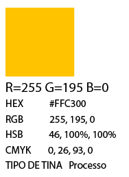

Home
Jaci
Rudá
Tupã
Guaraci
"Divindade do Sol;
Guaraci é o deus do Sol, guardião do dia que auxiliou seu pai Tupã a criar todos os seres vivos.
Ele também é o responsável por vigiar e cuidar de todos os seres vivos durante o dia. A noite esta tarefa é passada para sua irmã (e segundo alguns versões esposa) Jaci."
Fonte

Para esta estampa, usei formas básicas e efeitos para criar um sol que é o foco principal, representando Guaraci. Usei uma paleta de cores com amarelo, marrom e verde para simbolizar a ligação dele com a natureza e os animais, dos quais é o guardião durante o dia. No centro, usei tons claros de azul e duas luas para representar Jaci, sua irmã e, em algumas versões do mito, sua esposa, que assume a vigília do mundo durante a noite.
